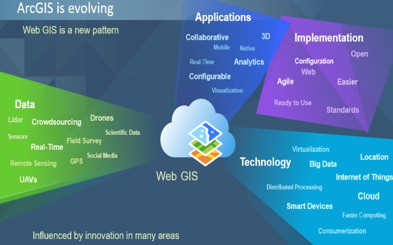

Web GIS Technology
Web GIS is an advanced form of geospatial data transfer in which the communication takes place between the client and the server. GIS stands for Geospatial Information system. In this client-server architecture, the client can access large geographical data of parts of the globe, located in a remote server by making use of an URL (Uniform Resource Locater), without having to access those informations by creating custom applications. The client can be a web server, mobile application and desktop application.
The Web GIS technology allows organizations to effectively manage their geographic data, and also it provides a platform for integrating GIS with other business systems and enables cross-organizational collaboration. Earlier to answer a set of questions based on such data, the data had to be throughly analyzed and then a possible answer had to be framed, but with the emergence of this technology, now the data is transformed into web maps or services that are mashed up with different layers into a webGIS, which provides the possibility to answer any sort of questions.
Published: 1st Jul 2021
